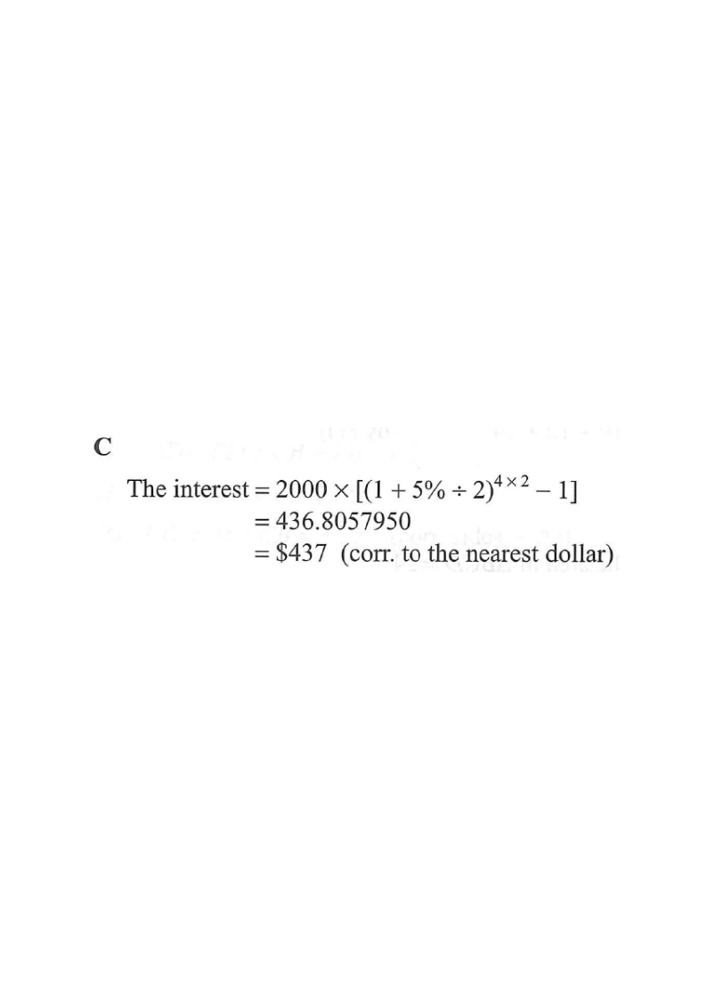

Amount grows from $2000 by 2.5% every half‑year, 8 periods in total.
Question. A sum of $\$2000$ is deposited at an interest rate of $5\%$ per annum for $4$ years, compounded half‑yearly. Find the interest correct to the nearest dollar.

1Identify the given data
Principal $P = 2000$, nominal annual rate $R = 5\%$, time $T = 4$ years, compounding frequency = half‑yearly (twice per year).
So the number of compounding periods per year is $n = 2$.
Careful: "per annum" rate is $5\%$, not the rate per period. You must divide by the number of periods per year.
2Find the rate per half‑year
Interest rate per period $= \dfrac{5\%}{2} = 2.5\% = 0.025$.
Number of periods $= 4 \times 2 = 8$.
Dividing the annual rate by 2 and doubling the number of periods keeps the total time the same.
3Apply the compound interest formula
Amount after 8 periods:
$$A = 2000\left(1 + \frac{5\%}{2}\right)^{4 \times 2} = 2000\,(1.025)^{8}$$
Use $A = P\left(1+\frac{R}{n}\right)^{nT}$; the interest is $A - P$.
4Compute the interest
$$\text{Interest} = A - P = 2000\left[(1.025)^{8} - 1\right]$$
$$(1.025)^{8} \approx 1.218402\,898$$
$$\text{Interest} \approx 2000 \times 0.218402\,898 = 436.805\,7950$$
Keep the full calculator value until the final rounding to avoid rounding errors.
5Round to the nearest dollar
$436.805\,7950 \to \$437$ (to the nearest dollar).
Since the first decimal digit is $8 \ge 5$, round up.
Question. A sum of \(\$5000\) is deposited at \(4\%\) per annum for \(3\) years, compounded quarterly. Find the interest correct to the nearest dollar.